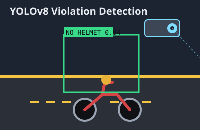

Designing a Violation-Processing System: From Use Cases to a Working Pipeline
Behind the YOLOv8 model in the Smart Rider Monitoring & Violation Detection System sits a full systems-engineering effort — use-case modeling, entity-relationship design, and data-flow diagrams that turned a computer-vision experiment into a system a traffic authority could actually operate.
Overview
It's easy to treat a computer-vision project as "done" once a model detects the thing it was trained to detect. The harder — and more instructive — part of this project was everything downstream of detection: how does a single flagged frame become a legally defensible violation record, get matched to a vehicle owner, and turn into a payable e-challan without a human having to manually process every case? Answering that question meant treating the project as a systems-engineering exercise first and a machine-learning exercise second. Before any pipeline code was written, the system was modeled with use-case diagrams to pin down who interacts with the system and how, an entity-relationship diagram to define what data needs to persist and how it relates, and data-flow diagrams to trace exactly how a piece of evidence moves from a camera frame to a citizen's inbox.
This case study focuses specifically on that modeling process and the architectural decisions it forced — the companion case study on the detection pipeline itself covers the computer-vision side in more depth.
System Architecture
Modeling the system surfaced three distinct actors whose needs pulled the design in different directions: the automated detection engine (which needs speed and low false-positive rates), the traffic-authority reviewer (who needs an auditable trail and the ability to overrule the model), and the vehicle owner (who needs a clear, verifiable notice and a simple way to pay or contest a fine). The architecture that emerged has four layers built specifically to keep those three actors' concerns separated.
1. Detection & Evidence Capture
The YOLOv8-based pipeline processes incoming video and, on a suspected violation, packages an evidence bundle: the annotated frame, a timestamp, the camera's registered location, the violation type, and a model confidence score. Critically, this layer never makes a final decision — it only proposes a case.

2. Review & Verification
Every proposed case lands in a queue on a reviewer-facing web dashboard before anything is sent to a vehicle owner. This step exists because the use-case modeling made it clear early on that an automated system issuing fines with zero human oversight was both a fairness problem and, practically, a false-positive liability. The ER model reflects this directly: a `Violation` entity has a status field (`pending_review`, `confirmed`, `rejected`) rather than being created in an already-final state.
3. Plate Resolution
Only once a case is confirmed does the system run plate localization and OCR to resolve the vehicle owner — deliberately deferred until after confirmation, both to save compute on cases that get rejected in review and to avoid running identity-resolving OCR on footage that hasn't been confirmed as an actual violation.
4. Notification & Payment
A confirmed, plate-resolved case is compiled into an e-challan record linked to the vehicle owner's contact details and dispatched by email/SMS with a payment reference. The data-flow diagram for this stage was where the ER design paid off most directly: because `Violation`, `Vehicle`, `Owner`, and `Challan` were modeled as separate, clearly related entities from the start, generating a challan is a join across existing records rather than a special case requiring new data to be invented late in the pipeline.
Technical Challenges Overcome
- Keeping the ER model normalized under pressure to "just ship": Early drafts stored plate numbers directly on the `Violation` record for convenience. Once repeat offenders started appearing in test data, this made it impossible to answer a simple question — "how many prior violations does this vehicle have?" — without string-matching across records. Introducing a proper `Vehicle` entity, related to `Violation` by a foreign key, solved this and made repeat-offender queries trivial.
- Modeling a decision the system isn't allowed to make alone: Use-case modeling revealed that "confirm violation" needed to be a distinct actor-triggered use case, not an automatic side effect of detection. This shaped the API design directly — the detection service and the review-confirmation action are separate endpoints with separate auth scopes, so a reviewer's confirmation is always an explicit, logged action.
- Data-flow bottleneck at the OCR stage: Initial data-flow diagrams assumed OCR would run on every detected frame. Load-testing the sequence diagram against expected camera throughput showed this would never keep up in real time. Redrawing the flow so OCR only triggers after human confirmation resolved the bottleneck at the design stage, before a single line of OCR integration code was written.
- Keeping the component diagram honest as the stack grew: As the React frontend, Express API, detection service, and database were built somewhat in parallel, the component diagram had to be revisited twice to stay accurate — a reminder that a system model is only useful if it's treated as a living document rather than a one-time deliverable.
Key Code / Hardware Components
The `Violation` entity's status-driven design, sketched below, is the piece of the data model that most directly encodes the human-in-the-loop principle the use-case diagrams established:
Violation {
id: UUID
vehicleId: FK -> Vehicle.id (nullable until plate resolved)
cameraId: FK -> Camera.id
violationType: enum(NO_HELMET, TRIPLE_RIDING, ...)
confidenceScore: float
status: enum(PENDING_REVIEW, CONFIRMED, REJECTED)
evidenceFrameUrl: string
detectedAt: timestamp
reviewedBy: FK -> ReviewerUser.id (nullable)
}
Challan {
id: UUID
violationId: FK -> Violation.id
ownerId: FK -> Owner.id
amount: decimal
paymentStatus: enum(UNPAID, PAID, DISPUTED)
issuedAt: timestamp
}The application layer built on top of this model is a React + TypeScript frontend for the reviewer dashboard, a Node.js/Express API enforcing the status transitions above, and a Python-based detection service that communicates with the API over an internal REST interface — three independently deployable components, exactly as captured in the component diagram.
Key Takeaways
The biggest lesson from this project wasn't about any single diagram — it was that the use-case diagram, drawn first, quietly dictated the shape of every diagram that came after it. Deciding early that a human reviewer is a first-class actor, not an afterthought, is the single design choice that explains why the ER model has a status field, why the data-flow diagram defers OCR, and why the API has separate detection and confirmation endpoints. It reinforced a general principle I now apply to every non-trivial system: model who is accountable for a decision before modeling how the data for that decision is stored, because the accountability model tends to constrain the data model, and rarely the other way around.